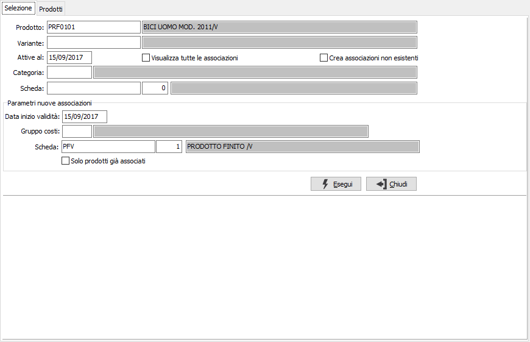
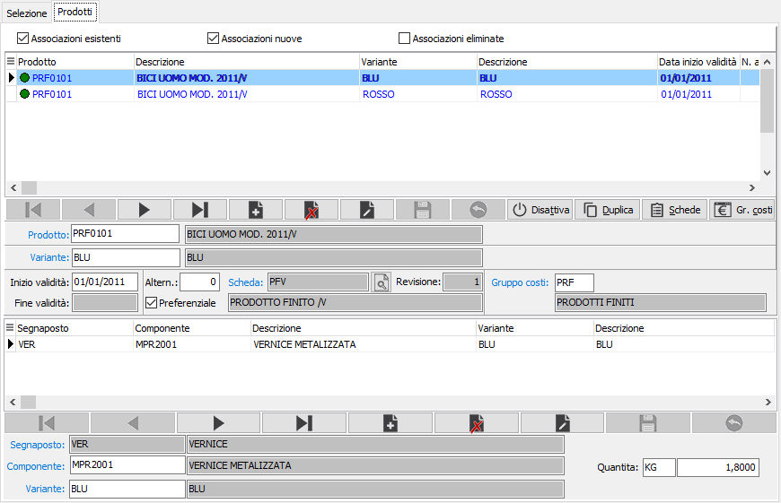
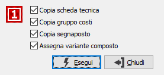
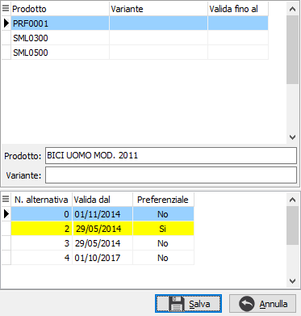

Associazione prodotti
La scheda tecnica per essere operativa deve essere associata al prodotto finito attraverso questa funzione; la funzione di associazione può essere richiamata anche dall’apposito bottone presente in gestione Scheda tecnica e dall’anagrafica articoli.
La finestra si articola su due pagine, una per l'inserimento dei parametri di selezione e l'altra per la gestione dei prodotti selezionati.
Selezione

Vengono richiesti i limiti di selezione per prodotto e categoria merceologica ed eventualmente la scheda tecnica già associata, la data di attivazione viene utilizzata come parametro per la validità delle associazioni esistenti; è possibile visualizzare le associazioni esistenti spuntando l'apposita casella e creare le associazioni in automatico spuntando la casella "Crea associazioni non esistenti". Sia per creare in automatico le associazioni che per effettuare l'associazione dalla pagina prodotti è necessario indicare la data inizio validità, il gruppo costi e la scheda tecnica sono opzionali se non si è selezionata la creazione automatica e se inseriti saranno utilizzati come proposta per le nuove associazioni. Nel caso in cui sia stata indicata una specifica scheda come criterio di selezione, spuntando la casella Solo prodotti associati, si specifica che le nuove associazioni dovranno essere create solo per i composti già associati a tale scheda.
Prodotti
Nella pagina vengono riportate le eventuali associazioni presenti, se spuntata la casella di visualizzazione e le nuove associazioni generate se spuntata la casella di creazione nei parametri; da questa pagina si possono inserire nuove associazioni, variare le presenti se non utilizzate ed assegnare i componenti ai segnaposto se attiva la gestione. Nella parte alta della finestra sono presenti delle caselle da spuntare per visualizzare o meno le associazioni esistenti, nuove ed eliminate.

I prodotti vengono visualizzati con a sinistra un indicatore in colori diversi a seconda del tipo di associazione:
Verde: l'associazione è già stata effettuata ed attiva senza fine validità
Giallo: l'associazione è appena stata inserita ed ancora non salvata
Grigio: è stata inserita un'associazione, ma manca l'indicazione della scheda tecnica
Rosso: l'associazione è già stata effettuata ed attiva con una data specifica di fine validità
Durante la fase di associazione devono essere definiti:
la data di inizio validità dell’associazione fra il composto e la scheda
il gruppo costi di produzione da utilizzare per la determinazione del prezzo di vendita
i componenti specifici da utilizzare per il composto in corrispondenza dei segnaposto presenti nella scheda, se attiva la gestione.
Sono inoltre presenti dei pulsanti per semplificare alcune operazioni:
Disattiva : consente di disattivare alla data di sistema l'associazione selezionata; in questo caso sarà assegnata la data di fine validità all'associazione e se spuntata la casella di visualizzazione delle associazioni eliminate sarà mostrata l'associazione con l'indicatore rosso; il pulsante non è attivo se l'associazione ha una data di fine validità o sono presenti RDP o ODP successivi all'inizio validità dell'associazione.

Duplica: consente la duplicazione dell'associazione selezionata; viene aperta la finestra mostrata a lato che consente di selezionare quali elementi dell'associazione duplicare sulla nuova associazione tra: scheda tecnica, gruppo costi, segnaposto e varianti. Sia i segnaposto che le varianti sono presenti solo se attive le relative gestioni. Il pulsante non è attivo se presenti ODP pianificati.Scheda: consente di selezionare la scheda tecnica da associare. Il pulsante non è attivo se presenti RDP o ODP successivi all'inizio validità dell'associazione.
Gruppo costi: consente di selezionare il gruppo costi da associare.
Le operazioni che vengono eseguite in questa pagina, sia di inserimento, variazione o cancellazioni sono provvisorie, per renderle definitiva è necessario premere il pulsante Salva presente nella Toolbar.

Se gestite le alternative ed al salvataggio è presente più di una alternativa per il prodotto compare la finestra mostrata a lato da cui è possibile impostare interattivamente l’alternativa preferenziale.